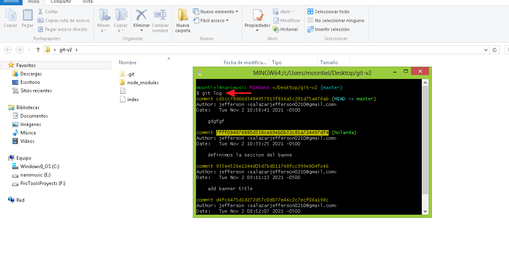

06. Git Log
Nos permite conocer detalles de los commits realizados como su codigo, fecha de subida, y el usuario que lo realizo ayudandonos a realizar un seguimiento exacto de estos.
01. Git log: Datos exactos de los commits

02. Git log --oneline: Conociendo los commits

End Git Log